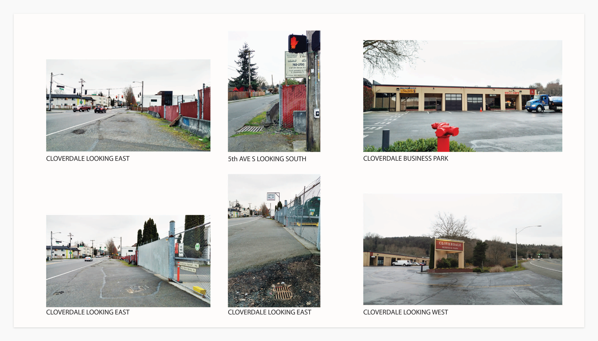
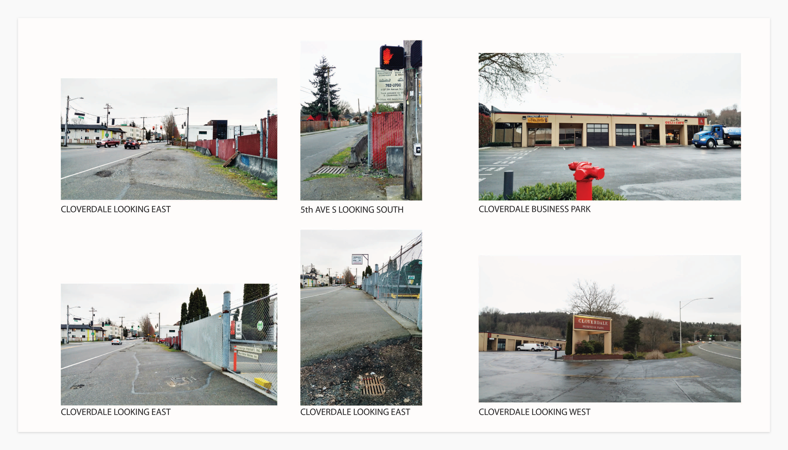

5th and Cloverdale Project (In Progress)
Project Management, Community Outreach
South Park is one of Seattle's most diverse neighborhoods. Located on the banks of the Duwamish River, the tight-knit community has a rich history and strong industrial roots. South Park also suffers from environmental inequities such as lower than average life expectancies and fewer public green space than other parts of the city.
The goal of this project is to create a safe and pleasant connection for pedestrians and bicyclists to a local business park, improve overall safety on this intersection, and highlight South Parks' entry from West Seattle.
I spearheaded this project through Duwamish Valley Safe Streets, a volunteer organization dedicated to safer bicycle and pedestrian connections in the Duwamish Valley. A fellow volunteer and I are now co-leading this project, and we make one hell of a team if I do say so myself.
 
